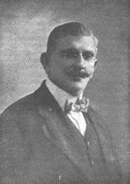

Manuel Zeno Gandia
Manuel Zeno Gandia nace en Arecibo el 1855 y llega a ser medico y escritor. Estudia medicina en madrid y se termina graduando el 1875. Regresó a Puerto Rico en 1876, dedicándose a ejercer como médico, así como al periodismo, la política y las letras. Fue el primero en proponer la fundacion de un partido independentista.

Otras obras
Gandia publica otras dos novelas junto a la charca. Garduña(1896) y el neogcio(1922). Cuando fue periodisto era redactor de La Opinión